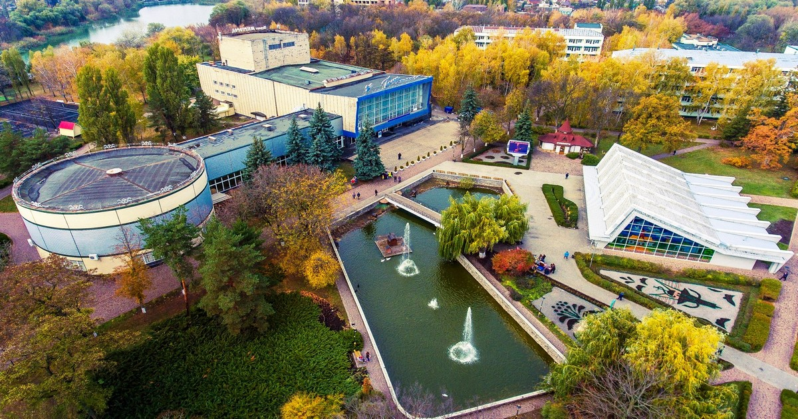

.jpg)
Відпочинок в Миргороді
Стародавнє містечко, славнозвісний курорт Миргород, який є батьківщиною
відомого письменника Миколи Гоголя вабить до себе туристів. Місто
розташоване на ріці Хорол володіє цілющим мікрокліматом, а тутешні
мінеральні води славляться своїми оздоровчими властивостями. Саме на їх
основі базується оздоровлення.
З давніх давен вода з цих джерел зцілює людські тіла та дарує шанс на
оздоровлення, це й посприяло активному розвитку курорту, що зараз є
добре відомим для кожного українця. На сьогоднішній день, курорт
Миргород має добре розвинену відпочинкову інфраструктуру. Звісно ж,
відпочинок розпочинається із планування бюджету. Ми вирішили дещо
спростити Вам цей процес та запропонувати житло на різний смак та
гаманець для відпочинку в Миргороді.
.jpg)
Миргород - місто контрастів
Миргород по праву можна назвати містом дивовижних загадок старовини.
Особливо сподобається подорож в цей куточок України любителям культури і
мистецтва. Вулицями містечка свого часу часто прогулювалися такі видатні
особистості, як Микола Гоголь, Іван Котляревський, Панас Мирний, Данило
Апостол. Кожен з них з вдячністю і теплотою згадував дні, проведені в
цьому тихому мальовничому краї, атмосфера якого розташовує до творчості
і роздумів про сенс буття.
Миргород - місто контрастів, в його житті панує дух минулих часів і
сучасності. Краса природи тут гармонійно поєднується з продуманою
інфраструктурою. У місті передбачено все для комфортного перебування і
спокійного розміреного життя. У магазинах можна купити все необхідне,
сувенірні лавки готові запропонувати багатий асортимент пам'ятних
подарунків. Місцеві митці порадують вас національними піснями і танцями,
а вправні художники напишуть на пам'ять портрет.

Відпочинок в Миргороді
Відпочинок в Миргороді - це не тільки привід відпочити від трудових
буднів, а й хороша можливість оздоровитися. Миргородський курорт
дозволяє відновити сили і привести свій організм в порядок.
Основним оздоровчим засобом курортів світу є природна мінеральна вода,
близька за складом до світових курортів Баден-Бадена, Аахена і Содена.